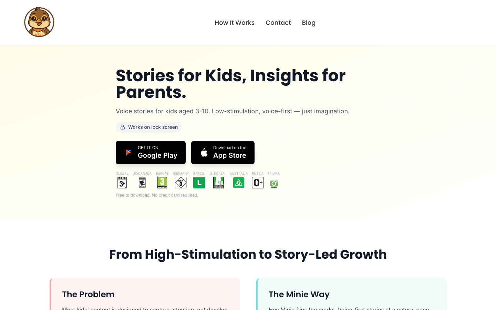
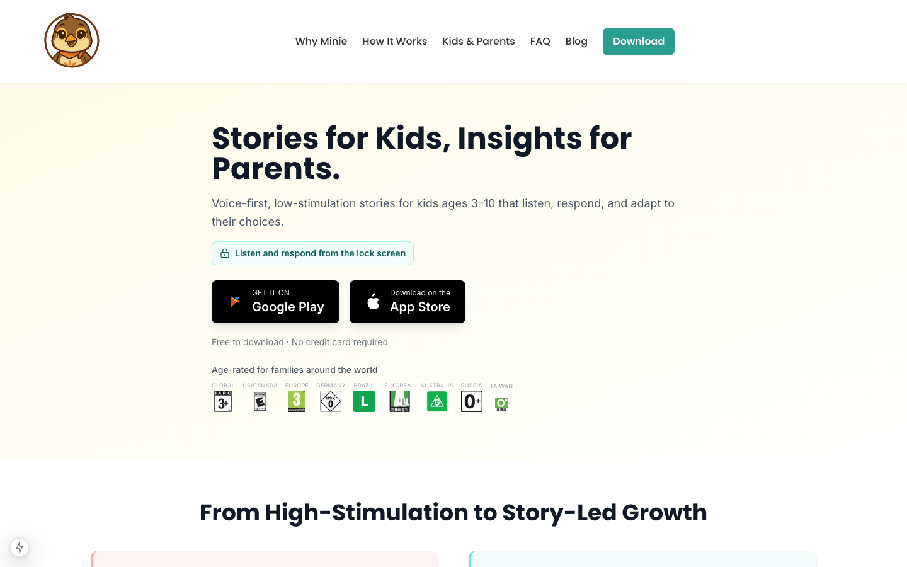
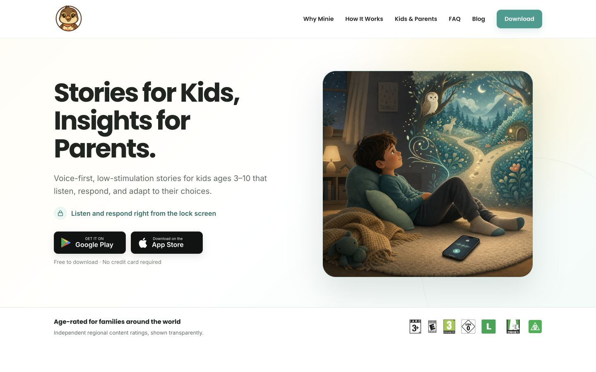
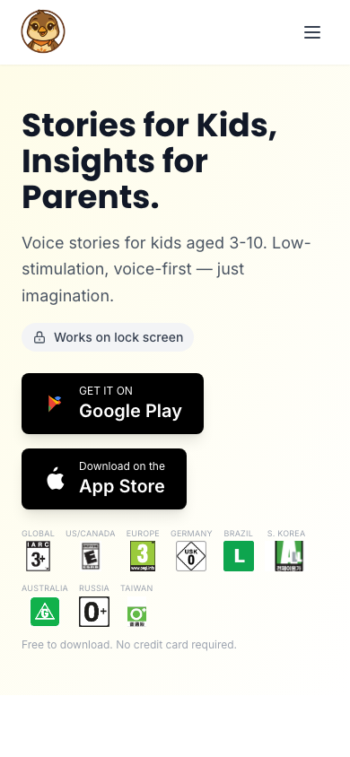
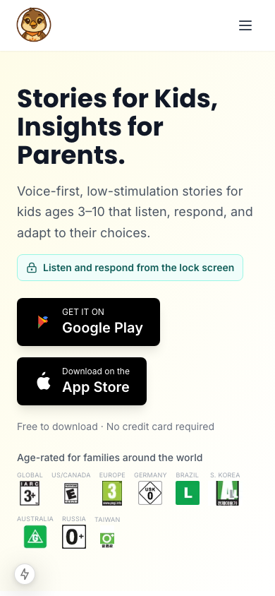
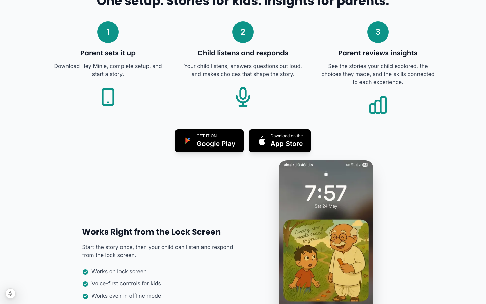
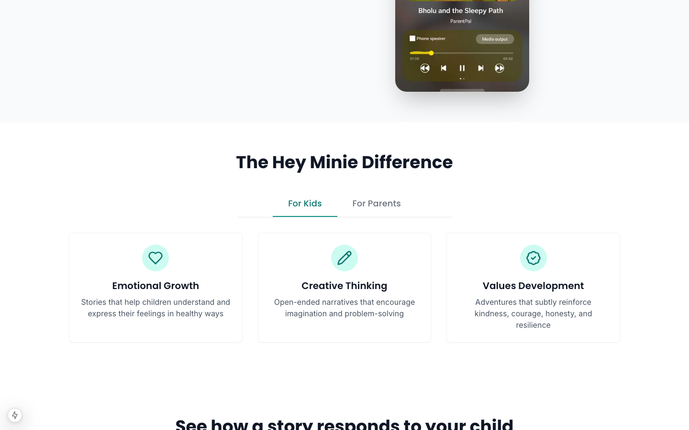
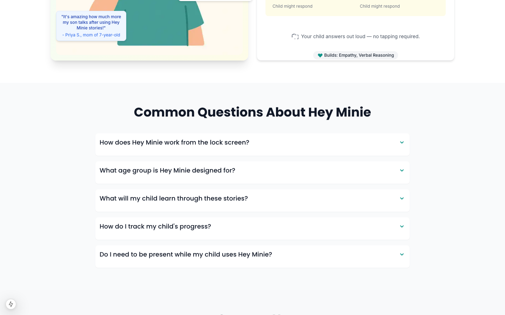

Turning mobile acquisition data into a clearer homepage
For Hey Minie, a voice-first storytelling app for children, I connected real acquisition behavior to a focused homepage-improvement program that strengthened how the product explains its core promise.
The signal
The homepage was the principal landing surface, especially for mobile and paid social visitors. It needed to explain the product, establish family trust, show what to do next, and sustain momentum from the acquisition promise.
Live baseline → proposed homepage direction
The first viewport was the critical comparison point. The live baseline shows the currently deployed navigation and hero. The branch implementation makes the intended hierarchy explicit and remains a proposed output awaiting deployment.



My approach
I combined a Plausible analytics review with a source-level audit and responsive browser QA. I treated the bounce rate as a signal and framed a set of testable causes: promise mismatch from paid social, weak first-screen clarity, insufficient product proof, and friction in the mobile path to download.





What I designed and implemented in the branch
- Shaped the homepage around a clearer product-led hero, lock-screen value, store actions, and family-safety context.
- Improved responsive hero behavior, mobile navigation, CTA consistency, desktop hierarchy, and vertical rhythm.
- Clarified the parent-child-parent sequence in “How it works,” giving setup, story use, and parent reflection a distinct role.
- Documented an event contract for privacy-conscious measurement of store CTA clicks, navigation, video interaction, FAQs, benefit tabs, and scroll depth.
- Created a reviewable audit and experiment backlog that separates validated behavior from hypotheses to test after deployment.
Design principle
The redesign focused on first-screen comprehension. A mobile visitor should quickly understand what Minie is, why it fits their family, and how to try it. The branch is awaiting deployment; the next measurement cycle should test whether the changes materially improve qualified download intent.